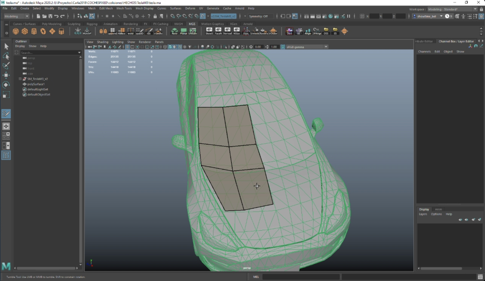
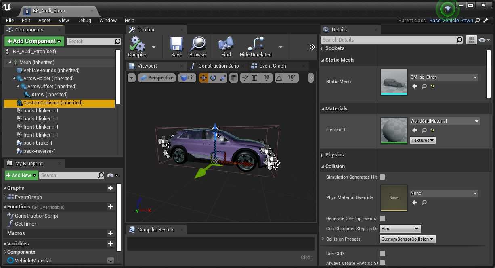

Generate detailed colliders
This tutorial explains how to create more accurate collision boundaries for vehicles (relative to the original shape of the object). These can be used as physics collider, compatible with collision detection, or as a secondary collider used by raycast-based sensors such a the LIDAR to retrieve more accurate data. New colliders can be integrated into CARLA so that all the community can benefit from these. Find out more about how to contribute to the content repository here.
There are two approaches to create the new colliders, but they are not completely equivalent.
- Raycast colliders — This approach requires some basic 3D modelling skills. A secondary collider is added to the vehicle so that raycast-based sensors such as the LIDAR retrieve more precise data.
- Physics colliders — This approach follows the tutorial created by the contributor Yan Kaganovsky / yankagan to create a mesh with no need of manual modelling. This mesh is then used as main collider for the vehicle, for physics and sensor detection (unless a secondary collider is added).
Raycast colliders
1-Export the vehicle FBX
First of all, the original mesh of the vehicle is necessary to be used as reference. For the sake of learning, this tutorial exports the mesh of a CARLA vehicle.
1.1 open CARLA in UE and go to Content/Carla/Static/Vehicles/4Wheeled/<model_of_vehicle>.
1.2 Press right-click on SM_<model_of_vehicle> to export the vehicle mesh as FBX.
2-Generate a low density mesh
2.1 Open a 3D modelling software and, using the original mesh as reference, model a low density mesh that stays reliable to the original.

2.2 Save the new mesh as FBX. Name de mesh as sm_sc_<model_of_vehicle>.fbx. E.g. sm_sc_audiTT.fbx.
Note
As for the wheels and additional elements such as roofs, mudguards, etc. the new mesh should follow the geometry quite accurately. Placing simple cubes will not do it.
3-Import the mesh into UE
3.1 Open CARLA in UE and go to Content/Carla/Static/Vehicles/4Wheeled/<model_of_vehicle>.
3.2 Press right-click to import the new mesh SM_sc_<model_of_vehicle>.fbx.
4-Add the mesh as collider
4.1 Go to Content/Carla/Blueprints/Vehicles/<model_of_vehicle> and open the blueprint of the vehicle named as BP_<model_of_vehicle>.
4.2 Select the CustomCollision element and add the SM_sc_<model_of_vehicle>.fbx in the Static mesh property.

4.3 Press Compile in the toolbar above and save the changes.
Note
For vehicles such as motorbikes and bicycles, change the collider mesh of the vehicle itself using the same component, CustomCollision.
Physics colliders
Important
This tutorial is based on a contribution made by yankagan! The contributor also wants to aknowledge Francisco E for the tutorial on how to import custom collisions in UE.
This video shows the results achieved after following this tutorial.
0-Prerequisites
- Build CARLA from source on Linux or Windows.
- Blender 2.80 or newer from the official site for free (open-source 3D modelling software).
- VHACD Plugin for Blender following the using the instructions in here. This plugin automatically creates an approximation of a selected object using a collection of convex hulls. Read more.
Note
This series and Udemy course may be a good introduction to Blender for newcomers.
1-Define custom collision for wheels in Unreal Editor
Step 1. (in UE) — Add collision boundaries for the wheels. The steps are detailed in the following video.
2-Export the vehicle as FBX
Step 2. (in UE) — Export the skeletal mesh of a vehicle to an FBX file.
2.1 Go to Content/Carla/Static/Vehicles/4Wheeled/<model_of_vehicle>.
2.2 Press right-click on SM_<model_of_vehicle> to export the vehicle mesh as FBX.
3 to 4-Import to Blender and create custom boundary
Step 3. (in Blender) — Import the FBX file into Blender.
Step 4. (in Blender) — Add convex hull meshes to form the new collision boundary (UE requirement for computational efficiency). This is the hardest step. If the entire car is selected, the collision boundary created by VHACD will be imprecise and messy. It will contain sharp edges which will mess-up the drive on the road. It's important that the wheels have smooth boundaries around them. Using convex decomposition on the car's body the mirrors would still not look right. For computer vision, the details of the vehicle are important. For said reason, these step has been divided into two parts.
4.1 Cut out the bottom parts of the wheels, the side mirrors and the top part of the car's body to create the first boundary using the VHACD tool. Cut out the bottom half of the car to create the second boundary (top part of the car) using the VHACD tool.
4.2 Create separate boundaries for side mirrors using the VHACD tool.
Warning
Be very careful about naming the object. Each boundary should have begin with UCX_, and the rest of the name has to be exactly the same as the original mesh.
5-Export from Blender to FBX
Step 5. (in Blender) — Export the custom collision boundaries into an FBX file.
5.1 Select only the original vehicle and all the newly added objects for collision.
5.2 In the export menu, check selected objects and select only "Mesh".
6 to 8-Import collider and define physics
Step 6. (in UE) — Import the new FBX into CARLA as an Unreal asset file (static mesh).
Step 7. (in UE) — Import the custom collider into the physics asset for the specific vehicle, so that it is used for computations.
Step 8. (in UE) — Create constraints that connect the different joints and define the physics of all parts.
That is a wrap on how to change the default colliders for vehicles in CARLA.
Open CARLA and mess around for a while. If there are any doubts, feel free to post these in the forum.